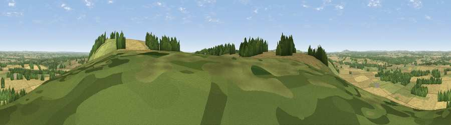

Viewpoint near Ham
#8254 in England · top 8% of its area beats it · near HamThe view, rendered

A 360° render of this exact spot computed from the terrain model, tree cover and land cover — summer colours, afternoon light, calibrated against photographs of famous viewpoints. Real trees, hedges and buildings will differ in detail.
The panorama
Grey silhouette: terrain skyline in each direction (720 bearings, Earth curvature and refraction included). Dashed green: skyline with trees (+15 m) and buildings (+8 m) as obstacles. Blue strip: how far the ground is visible on each bearing.
Where the view opens
Wedge length = distance to the farthest visible ground on that bearing (vegetation-aware). Rings at 10, 25 and 50 km.
What fills the view
54% cropland · 26% grassland · 19% woodland ·
Angular shares of the visible panorama (visual magnitude), not map area. Landscape diversity 0.45 (0–1 Shannon).
Key numbers
More beautiful places nearby
The staircase of upgrades: each row has a higher view potential than everything closer. Driving times are estimates from straight-line distance, calibrated against real road routing — check an actual route before setting out.
| Place | Direction | Drive | Score |
|---|---|---|---|
| Viewpoint near Ham | E · 1 km | ~2 min | 67.2 |
| Inkpen Hill | E · 2 km | ~4 min | 69.8 |
| Gallows Down | E · 2 km | ~6 min | 75.6 |
| Beacon Hill | ESE · 13 km | ~23 min | 76.7 |
| Martinsell viewpoint | W · 16 km | ~29 min | 77.3 |
| Viewpoint near Buriton | SE · 56 km | ~78 min | 80.0 |
| Beacon Hill | SE · 64 km | ~87 min | 85.8 |
| Mottistone Down | S · 78 km | ~101 min | 87.2 |
51.35538, -1.51186 · source: screening · position refined by local search. Computed location — check access rights before visiting.